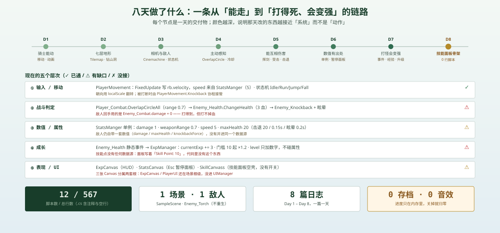

这是「ARPG 学习日志」系列的进度总览，随每篇日志一起更新。截至 Day 8（2026-10-19），工程处于「能走、能打、能升级，但闭环还差三根线」的状态。
一句话概括：从键盘到伤害这条链是通的，从伤害到成长这条链只通了一半，从成长到新能力这条链还只有一块画布。

八天时间线
| 天 | 主题 | 当天的交付物 |
|---|---|---|
| Day 1 · 10-11 | 让骑士动起来 | PlayerMovement：FixedUpdate 写 velocity、动画状态机、localScale 翻转朝向 |
| Day 2 · 10-11 | 七层瓦片与「钻山洞」 | 7 个 Tilemap 的分工（Low/High × Collision/Non-Collision）、Elevation_Entry / Exit 的碰撞体开关 |
| Day 3 · 10-13 | 相机与敌人初级 AI | Cinemachine（Follow + Confiner + DeadZone）、Enemy_Movement 的 Idle/Chasing 状态机 |
| Day 4 · 10-14 | 敌人主动感知与攻击 | OverlapCircleAll 检测、攻击冷却、Attacking 状态、Enemy_Combat.Attack() |
| Day 5 · 10-15 | 挥剑与受击反馈 | Player_Combat 武器判定、Enemy_Health、击退 + 眩晕协程 |
| Day 6 · 10-16 | 属性系统与暂停面板 | StatsManger 单例收拢 11 处引用、StatsUI + Esc 面板 + timeScale = 0 |
| Day 7 · 10-18 | 击杀给经验、升级 | Enemy_Health 静态事件、ExpManager 升级公式、ExpSlider + 等级文本 |
| Day 8 · 10-19 | UI 收拢与技能面板骨架 | UIManager、SkillCanvass、1200 面板 + 两棵树 + 24 个空格子（0 行新脚本） |
现在能玩到什么
| 已经通了 | 还断着 |
|---|---|
| WASD / 方向键移动，带跳跃与落地动画 | 玩家死亡：敌人 damage = 0，PlayerHealth 的归零分支从未被触发 |
| 相机跟随 + 地图边界约束 | 敌人重生：全场只有一只 Enemy_Torch，打死后不刷新 |
走进山体时角色消失在山后（sortingOrder 10 → 15） | 升级收益：LevelUp() 只加数字，属性、技能点都不动 |
| 挥剑命中敌人：扣血、击退、眩晕 | 技能：面板是空壳，24 个格子没有控件 |
| 敌人发现玩家、追上来、抬手攻击 | 技能点：文本写着「Skill Point: 10」，代码里没有这个东西 |
| 击杀 → 经验 → 升级 → 经验条重画 | 存档：全部在内存里，重开就归零 |
| Esc 打开属性面板并暂停游戏 | 面板开关：属性面板开局常显（alpha 变回 1），技能面板完全没有开关 |
五个层次
| 层 | 主要内容 | 状态 |
|---|---|---|
| ① 输入 / 移动 | PlayerMovement：rb.velocity、speed 5、四态动画 | ✓ 通 |
| ② 战斗判定 | Player_Combat / Enemy_Combat 的两次 OverlapCircleAll + 冷却 | ⚠ 敌人伤害是 0 |
| ③ 数值 | StatsManger 单例（玩家），敌人仍自带一套 | ⚠ 两套数据源 |
| ④ 成长 | Enemy_Health 静态事件 → ExpManager | ⚠ 升级无产出 |
| ⑤ 表现 / UI | ExpCanvas / StatsCanvas / SkillCanvass | ⚠ 两套根、无开关 |
脚本清单
Assets/Scripe/ 下共 12 个脚本、567 行（含注释与空行）：
| 脚本 | 行数 | 挂载 | 职责 |
|---|---|---|---|
PlayerMovement | 65 | Player | 移动、动画状态、被击退时接管控制 |
Player_Combat | 53 | Player | 挥剑判定（OverlapCircleAll）、冷却、调用敌人扣血 |
PlayerHealth | 24 | Player | 读写 StatsManger.currentHealth、刷 HP 文本、归零则 SetActive(false) |
StatsManger | 32 | StatsManager | 单例，玩家全部数值的唯一出处 |
StatsUI | 46 | StatsPanel | Esc 开关属性面板、timeScale 时停、写槽位文字 |
ExpManager | 56 | ExpCanvas | 订阅击杀事件、累加经验、升级、刷经验条与等级 |
Enemy_Movement | 140 | Enemy_Torch | Idle / Chasing / Attacking / Knockback 四态机、检测与追击 |
Enemy_Health | 30 | Enemy_Torch | 血量、归零时广播 expReward 再销毁 |
Enemy_Combat | 37 | Enemy_Torch | 攻击判定、击退与眩晕 |
Enemy_Knockback | 30 | Enemy_Torch | 击退位移与眩晕计时 |
Elevation_Entry | 27 | Non-Collision-Low | 进山：关山体碰撞、开内部围栏、角色提到 15 层 |
Elevation_Exit | 27 | Exit | 出山：三个操作全部反向 |
提示
Enemy_Movement 一个脚本占了全项目的四分之一行数——状态机、检测、追击、翻转、Gizmo 全在里面。等加第二种敌人时，这里该先拆一次。
场景结构
| 根物体 | 内容 |
|---|---|
==CAMERAS= | Main Camera + Cinemachine Virtual Camera（Follow / Confiner） |
Confiner | 相机边界多边形 |
Elevation_Base | 7 个 Tilemap（Water / Ground / Rocks / Collision-Low / Non-Collision-Low(+Exit) / Collision-High / Non-Collision-High / MountainBoundary） |
Player | PlayerMovement + Player_Combat + PlayerHealth + AttackPoint |
Enemy_Torch | Enemy_Movement + Enemy_Health + Enemy_Combat + Enemy_Knockback + AttackPoint / DetectionPoint |
StatsManager | StatsManger 单例 |
UIManager | StatsCanvas（StatsPanel + Banner + TextPanel）· SkillCanvass（SkillPanel + 两棵树 + 技能点） |
ExpCanvas | 经验条 + 等级文本 + ExpManager（还没收进 UIManager） |
PlayerUI | HP 文本（同上） |
EventSystem | 输入模块 |
数值速查
| 玩家 | 值 | 敌人 | 值 |
|---|---|---|---|
damage | 1 | maxHealth | 3 |
weaponRange | 0.7 | expReward | 3 |
cooldown（挥剑） | 2 s | damage | 0 |
speed | 5 | speed | 3 |
maxHealth | 20 | attackRange | 2 |
knockbackForce | 20 | attackCooldown | 2 s |
knockbackTime | 0.15 s | playerDetectRange | 4.14 |
stunTime | 0.2 s | weaponRange | 0.8 |
| 成长 | 值 |
|---|---|
| 初始等级 | 0 |
| 本级门槛 | 10，每级 ×1.2（RoundToInt） |
| 单只怪经验 | 3 |
| 节奏 | 一刀 1 点 → 3 刀一只；冷却 2 s → 最快约 4 秒一只 |
| 到 Lv10 累计 | 253 经验 ≈ 85 只 |
三条数据流
移动
Input → PlayerMovement.FixedUpdate → rb.velocity = dir × StatsManger.speed → Animator（Idle/Run/Jump/Fall）
攻击
Input(Slash) → Player_Combat.Attack() → 动画事件 → DealDamage() → OverlapCircleAll(enemyLayer) → Enemy_Health.ChangeHealth(-damage) → Enemy_Knockback.Knockback(...)
经验
Enemy_Health.currentHealth ≤ 0 → OnMonsterDefeated(3) → ExpManager.GainExperience(3) → currentExp += 3 → if ≥ expToLevel → LevelUp() → UpdateUI() → Slider.maxValue / value + 文本
问题清单
P0：挡住「可玩」
| # | 问题 | 位置 | 后果 |
|---|---|---|---|
| 1 | 敌人 damage = 0 | Enemy_Combat Inspector | 玩家永远不掉血，死亡 / 失败流程从未被验证 |
| 2 | 没有敌人刷新 | 场景 | 经验唯一稳定来源是按 Return 的调试键 |
| 3 | 升级判定用 if 不是 while | ExpManager.GainExperience | 一次给大额经验会卡在「条满、等级不动」（90 / 12） |
| 4 | 静态事件没有 ?.Invoke | Enemy_Health.ChangeHealth | 没订阅者时抛异常 → Destroy 不执行 → 敌人不死 |
| 5 | ExpManager 挂在 Canvas 上 | ExpCanvas | 关 HUD 就退订，直接触发第 4 条 |
| 6 | 升级没有任何产出 | ExpManager.LevelUp | 等级是孤立数字，属性与技能点都不动 |
P1：能玩但不对
| # | 问题 | 位置 |
|---|---|---|
| 7 | 属性面板数字是启动快照（UpdateAllStats 只在 Start 调） | StatsUI |
| 8 | 属性面板 alpha 变回 1，开局就盖住屏幕并拦截点击 | StatsCanvas.CanvasGroup |
| 9 | 技能面板没有任何开关脚本 | SkillCanvass |
| 10 | 24 个技能格子只有 RectTransform，无 Image / Button | CombatPanel ×2 |
| 11 | 「Skill Point: 10」是硬编码 | SkillPointText |
| 12 | 经验条可以被鼠标拖动（Interactable 未关、HandleRect 为空） | ExpSlider |
| 13 | 暂停时仍能挥剑（timeScale = 0 不拦 Update 里的输入） | Player_Combat |
| 14 | 两个面板没有互斥：同时打开时 timeScale 谁最后写谁赢 | StatsUI / 未来 SkillsUI |
P2：工程卫生
| # | 问题 |
|---|---|
| 15 | 命名：StatsManger（少 a）、isKnockack（少 b）、SkillSTile、两个同名的 CombatPanel |
| 16 | ExpCanvas 参考分辨率 1920 × 108（少个 0） |
| 17 | Layer 混用：StatsCanvas 在 5，SkillCanvass 整套在 0 |
| 18 | SkillPanel 1200 × 1200 超出 1080 参考，上下各裁 60 |
| 19 | 文案格式不一致：Strenth: 00、LEVEL: 0、Combat vs MAGIC |
| 20 | 没有存档、没有音效、没有死亡与重生流程 |
下一步
| 天 | 计划 | 验收标准 |
|---|---|---|
| Day 9 | SkillSlot 预制体（Image + Button + Tooltip）、SkillsUI 开关（K 键 + 时停）、技能点数据接到 ExpManager.LevelUp() | 按 K 能开面板；升级时右侧数字 +1；鼠标能点动格子 |
| Day 10 | SkillData（ScriptableObject：id / 名称 / 消耗 / 前置 / 效果）、学习与消耗、已学状态变亮、连线 | 前置没学则点不动；点数够才能学；学完立刻生效 |
| Day 11 | 敌人刷新器、修正敌人 damage、死亡与重生流程 | 可以连打十几只怪，会死、会重来，经验持续增长 |
| Day 12 | 存档（JSON / PlayerPrefs）、音效、数值搬进 ScriptableObject | 退出再进等级与已学技能还在 |
如果只能先修三件事：把敌人 damage 从 0 改回非零（否则整套战斗反馈没法验证）、给静态事件补 ?.Invoke 并把 ExpManager 挪出 Canvas（一个字符换一条命）、把 if 改 while（一次大额经验不再卡死）。
怎么跟进
八篇日志各自只讲一天的事，这里是横向对照：